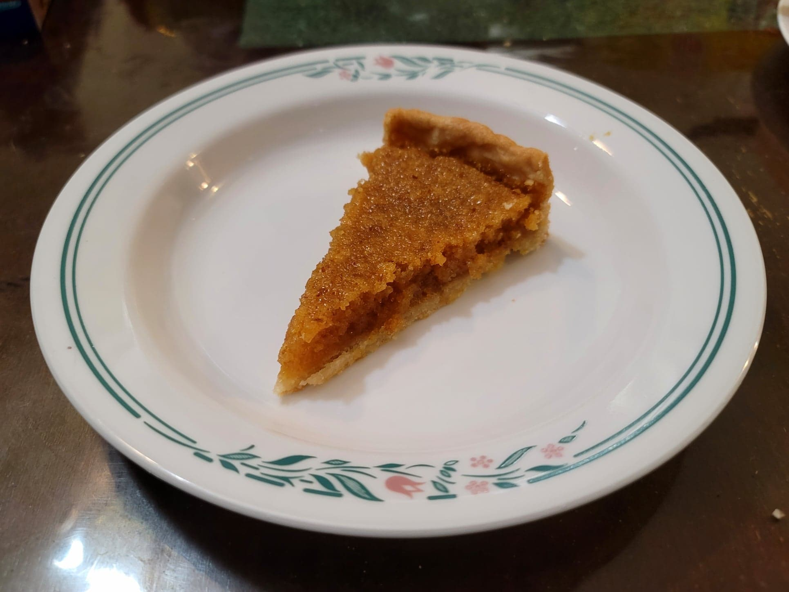

Treacle Tart

Ingredients:
Crust:
- 220 g Flour
- 1/2 tsp Salt
- 75 g Butter, cold
- 75 g Lard, cold
- 80 ml Water, cold
Filling:
- 1 1/4 cup (450 g) Golden syrup
- 1 Lemon, zest + juice
- 100 g Fresh white breadcrumbs, breadcrumbs made from fresh white bread
- 3 tbsp (45 ml) Heavy cream
- 1 Egg
Instructions:
- Place the flour and salt into a food processor and pulse briefly to combine. Then add in the lard and butter. Pulse until it is a crumbly texture. Add water in increments in between pulses to combine. Do not overmix as the crust may become tough and less flakey. It is ready when it is crumbly but holds its shape when pressed together.
- Shape the dough into a circle and then flatten it to a 1 inch thick disk. Cover in plastic wrap and transfer to the fridge to chill for at least 30 minutes.
- Preheat an oven to 375 degrees Fahrenheit. Grease a 9" quiche pan.
- Roll out the dough to fit just slightly over the walls of the quiche pan. Then transfer to the quiche pan. Optionally, roll the dough out onto plastic wrap to make transferring it to the pan easier.
- Pierce the crust dough with many holes using a fork. Line the inside of the crust dough with parchment paper. Then fill it with dried beans or similar. Bake for 10-15 minutes, or until the crust starts to really hold its shape. Then remove the parchment paper and dried beans and bake for another 5-10 minutes, or until very pale golden.
- To prepare the filling, add the golden syrup and lemon zest + juice to a medium saucepan. Heat over medium heat just until the syrup becomes runny and then stir in the breadcrumbs. Remove from heat and let cool for 5 minutes.
- In a separate bowl, whisk together the heavy cream and egg. After the 5 minutes of cooling, stir in the egg mixture to the filling.
- Pour the filling into the pie crust. Place back into the oven for about 20-25 minutes, or until the filling has set and the crust is lightly golden.
- Remove from the oven and let cool. Serve on its own or with clotted cream, whipped cream, or custard.